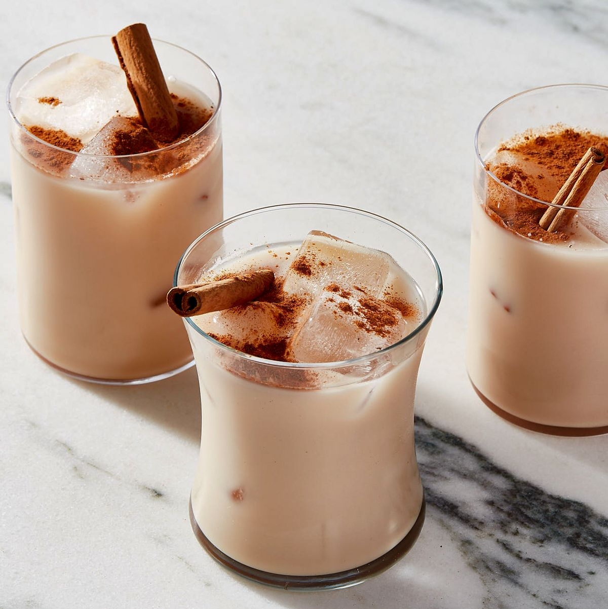
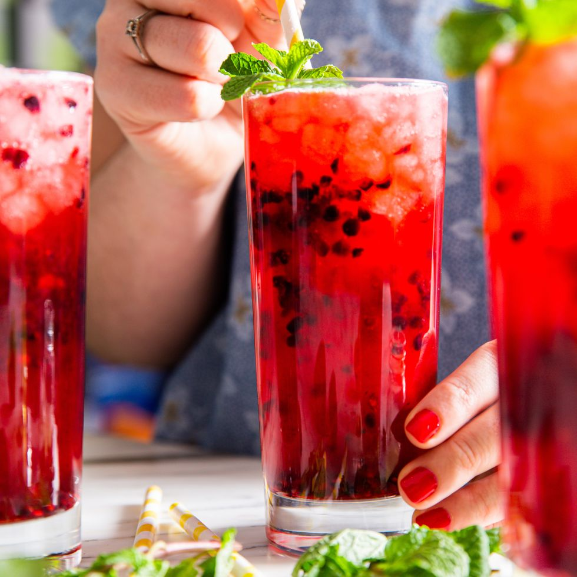

SUMMER THRILLING MOCKTAILS 🍹
WASSAIL

Ingredients
- 8 c. apple cider
- 1 c. fresh orange juice
- 2 lemons, sliced, plus more for serving
- 1 (1/2") piece ginger, peeled
- 1 bags black tea
- 2 (3") cinnamon sticks, plus more for serving
- 6 cardamom pods
- 5 whole cloves
- 3 allspice berries
- 2 whole star anise pods, plus more for serving
- Pinch of grated fresh nutmeg
- Bourbon or brandy, for serving (optional)
Steps
- In a large pot over low heat, bring cider, orange juice, lemon slices, ginger, tea, cinnamon, cardamom, cloves, berries, star anise, and nutmeg to a simmer.
- Cover and cook until spices are infused, about 1 hour.
- Strain through a fine-mesh sieve, then ladle wassail into mugs.
- Stir in 1 1/2 ounces bourbon per mug, if using. Garnish with lemon slices, a cinnamon stick, and star anise pods.
- Strain, reheat, and add bourbon before serving.
- Enjoy!
VIRGIN CRANBERRY BASIL SANGRIA

Ingredients
- 3 c. cranberry juice
- Juice of 1 orange (about 1/2 c.)
- 1 (12-oz.) can seltzer
- 1 orange, sliced
- 1 apple, cored and sliced
- 1/3 c. frozen cranberries
- 1/4 c. packed basil leaves
- Ice
Steps
- In a large pitcher, combine cranberry juice, orange juice, and seltzer. Add fruit and basil and stir to combine.
- Pour over ice to serve.
- Enjoy!